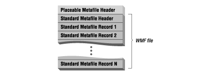
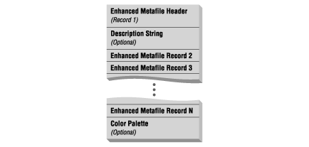

Also Known As: WMF, Enhanced Metafile, EMF, APM
| Type | Metafile |
| Colors | 24-bit |
| Compression | None |
| Maximum Image Size | NA |
| Multiple Images Per File | Yes |
| Numerical Format | Little-endian |
| Originator | Microsoft Corporation |
| Platform | Microsoft Windows |
| Supporting Applications | Numerous Microsoft Windows-based graphics applications |
| See Also | Encapsulated PostScript, Microsoft Windows Bitmap, and Microsoft Windows Clipboard |
Usage
Storage of vector drawings and bitmaps.
Comments
A widely used format associated with Microsoft Windows,
although many applications on other platforms provide support.
Microsoft Windows Metafile Format (WMF) files are used to store both vector and bitmap-format graphical data in memory or in disk files. The vector data stored in WMF files is described as Microsoft Windows Graphics Device Interface (GDI) commands. In the Window environment these commands are interpreted and played back on an output device using the Windows API PlayMetaFile() function. Bitmap data stored in a WMF file may be stored in the form of a Microsoft Device Dependent Bitmap (DDB), or Device Independent Bitmap (DIB).
Contents:
File Organization
File Details
For Further Information
In the Windows environment, metafiles are typically created and played back in memory. If the metafile data grows too large to be stored in memory, or needs to be saved before an application terminates, the data can be written to disk in the form of a WMF or EMF file and played back from disk. The maximum size of a Windows metafile is four gigabytes.
WMF is the original 16-bit Windows metafile format that appeared with Windows 2.0. EMF files are the 32-bit revision of the WMF format. EMF files have extended functionality over WMF files, including a color palette and full support for all 32-bit GDI commands. The Win32 API (Windows 95 and Windows NT) and 32-bit OLE support both WMF and EMF files. The Win16 and Win32s APIs (Windows 3.x) and 16-bit OLE only supports WMF files.
Although the Windows Metafile format is specific to Microsoft Windows, many non-Windows-based applications support this format as a method for interchanging graphical data with Windows applications. Because of the widespread popularity of the Microsoft Windows GUI, the Windows Metafile format has become a staple format for graphical applications and is therefore supported on most platforms. For example, Adobe's Encapsulated PostScript (EPS) supports the use of an included Windows Metafile when required to store vector-based data.
If you are using metafiles in the Windows or OS/2 operating systems you will not write code to parse them directly, but instead call a set of Windows API functions used to manipulate metafiles. Because there is ample documentation from Microsoft and IBM on how to use metafiles under Windows and OS/2, this article will look at the structure and direct parsing of Microsoft metafiles without the benefit of the Windows API.
If you have access to the Win16 Software Development Kit, then you will find all of the data structures and data type definitions associated with WMF files in the WINDOWS.H header file. For the Win32 SDK you will find WMF and EMF definitions in the WINUSER.H and WINGDI.H header files. Both of these SDKs are available with all C and C++ compilers that support Windows application development.
A metafile is comprised of one or two information headers and an array of variable-length records that store the GDI function call information.
There are four flavors of Windows metafiles: standard, placeable, clipboard, and enhanced. A standard metafile contains an 18-byte WMF header followed by one or more records of GDI commands. A placeable metafile contains a 22-byte header followed by the standard 18-byte WMF header and GDI command records. Clipboard metafiles contains a 8-byte (Win16) or 16-byte (Win32) header that precedes the standard metafile header. Enhanced metafiles contain only EMF records, with the first record storing the header information. EMF files are not compatible in design with the other types of WMF metafiles.
Windows Metafiles (Figure Microsoft Windows Metafile-1) contain a header, followed by one or more records of data. The header contains a description of the record data stored in the metafile. Each record is a binary-encoded Microsoft Windows Graphics Device Interface (GDI) function call. The GDI is used by Windows to perform all output to a window, printer, or other output device. When the metafile data is rendered (or played back, in Microsoft terminology), the data from each record is used to perform the appropriate GDI function call to render each object stored in the file. The last record in the file contains information indicating that the end of the record data has been reached.
Placeable metafiles (Figure Microsoft Windows Metafile-2) are WMF files with an 18-byte header prepended. This preheader contain information used to describe the position of the metafile drawing on the printed page (something that the original WMF file designers did not think of).

Clipboard metafiles (Figure Microsoft Windows Metafile-3) are similar to placeable metafiles in that that also contain an extra header prepended to a WMF file. The Clipboard preheader contains information used to describe the position of the metafile on the Windows Clipboard and the mapping mode used to playback the data.
Enhanced metafiles (Figure Microsoft Windows Metafile-4) have the same basic format of WMF files: a header followed by one or more records of drawing objects stored as GDI commands. Unlike WMF, the header is also stored in a record which appears as the first record in each EMF file. The EMF header now contains additional information, including the position and mapping information stored in the placeable and clipboard metafile preheaders. EMF also adds the features of a file description string and a programmable color palette to the metafile format.

The standard Windows metafile header is 18 bytes in length and is structured as follows:
typedef struct _WindowsMetaHeader
{
WORD FileType; /* Type of metafile (0=memory, 1=disk) */
WORD HeaderSize; /* Size of header in WORDS (always 9) */
WORD Version; /* Version of Microsoft Windows used */
DWORD FileSize; /* Total size of the metafile in WORDs */
WORD NumOfObjects; /* Number of objects in the file */
DWORD MaxRecordSize; /* The size of largest record in WORDs */
WORD NumOfParams; /* Not Used (always 0) */
} WMFHEAD;
FileType contains a value which indicates the location of the metafile data. A value of 0 indicates that the metafile is stored in memory, while a 1 indicates that it is stored on disk.
HeaderSize contains the size of the metafile header in 16-bit WORDs. This value is always 9.
Version stores the version number of Microsoft Windows that created the metafile. This value is always read in hexadecimal format. For example, in a metafile created by Windows 3.0 and 3.1, this item would have the value 0x0300.
FileSize specifies the total size of the metafile in 16-bit WORDs.
NumOfObjects specifies the number of objects that are in the metafile.
MaxRecordSize specifies the size of the largest record in the metafile in WORDs.
NumOfParams is not used and is set to a value of 0.
Placeable Metafiles (file extension .APM) were created by Aldus Corporation as a non-standard way of specifying how a metafile is mapped and scaled on an output device. Placeable metafiles are quite wide-spread, but not directly supported by the Windows API. To playback a placeable metafile using the Windows API, you will first need to strip the placeable metafile header from the file. This is typically performed by copying the metafile to a temporary file starting at file offset 0x16. The contents of the temporary file may then be used as input to the Windows GetMetaFile(), PlayMetaFile(), CopyMetaFile(), etc. GDI functions. Placeable Metafiles are limited to 64K in length.
Each placeable metafile begins with a 22-byte header followed by a standard metafile:
typedef struct _PlaceableMetaHeader
{
DWORD Key; /* Magic number (always 9AC6CDD7h) */
WORD Handle; /* Metafile HANDLE number (always 0) */
SHORT Left; /* Left coordinate in metafile units */
SHORT Top; /* Top coordinate in metafile units */
SHORT Right; /* Right coordinate in metafile units */
SHORT Bottom; /* Bottom coordinate in metafile units */
WORD Inch; /* Number of metafile units per inch */
DWORD Reserved; /* Reserved (always 0) */
WORD Checksum; /* Checksum value for previous 10 WORDs */
} PLACEABLEMETAHEADER;
Key contains a special identification value that indicates the presence of a placeable metafile header and is always 9AC6CDD7h.
Handle is used to stored the handle of the metafile in memory. When written to disk, this field is not used and will always contains the value 0.
Left, Top, Right, and Bottom contain the coordinates of the upper-left and lower-right corners of the image on the output device. These are measured in twips[1]. These four fields also correspond to the RECT structure used in Microsoft Windows and defined in the file WINDOWS.H.
[1] A twip (meaning "twentieth of a point") is the logical unit of measurement used in Windows Metafiles. A twip is equal to 1/1440 of an inch. Thus 720 twips equal 1/2 inch, while 32,768 twips is 22.75 inches.
Inch contains the number of twips per inch used to represent the image. Normally, there are 1440 twips per inch; however, this number may be changed to scale the image. A value of 720 indicates that the image is double its normal size, or scaled to a factor of 2:1. A value of 360 indicates a scale of 4:1, while a value of 2880 indicates that the image is scaled down in size by a factor of two. A value of 1440 indicates a 1:1 scale ratio.
Reserved is not used and is always set to 0.
Checksum contains a checksum value for the previous 10 WORDs in the header. This value can be in an attempt to detect if the metafile has become corrupted. The checksum is calculated by XORing each WORD value to an initial value of 0:
PLACEABLEMETAHEADER pmh; pmh.Checksum = 0; pmh.Checksum ^= (pmh.Key & 0x0000FFFFUL); pmh.Checksum ^= ((pmh.Key & 0xFFFF0000UL) >> 16); pmh.Checksum ^= pmh.Handle; pmh.Checksum ^= pmh.Left; pmh.Checksum ^= pmh.Top; pmh.Checksum ^= pmh.Right; pmh.Checksum ^= pmh.Bottom; pmh.Checksum ^= pmh.Inch; pmh.Checksum ^= (pmh.Reserved & 0x0000FFFFUL); pmh.Checksum ^= ((pmh.Reserved & 0xFFFF0000UL) >> 16);
An alternative way to step through the header structure one WORD at a time is to use a pointer as shown below:
PLACEABLEMETAHEADER *pmh;
WORD *ptr;
pmh->Checksum = 0;
for (ptr = (WORD *) pmh; ptr < (WORD *)pmh->Checksum; ptr++)
pmh->Checksum ^= *ptr;
Clipboard metafiles are stored in Microsoft Clipboard Viewer files (file extension .CLP) and Microsoft Windows Write files (file extension .WRI). Clipboard metafiles are also based on the standard metafile format, but are preceded by an additional 8- or 16-byte header that allows the position of the metafile on the Clipboard viewer. If the Clipboard metafile was created using a 16-bit version of Windows (Windows and Windows for Workgroups) this header will contain 2-byte fields arranged in the following structure:
typedef struct _Clipboard16MetaHeader
{
SHORT MappingMode; /* Units used to playback metafile */
SHORT Width; /* Width of the metafile */
SHORT Height; /* Height of the metafile */
WORD Handle; /* Handle to the metafile in memory */
} CLIPBOARD16METAHEADER;
MappingMode specifies the type of Windows coordinate mapping units used to store and playback the metafile data. This field will contain one of the following values:
| Value | Mapping Mode | One Unit Maps To |
|---|---|---|
| 1 | Text | One pixel |
| 2 | Low Metric | 0.1 millimeter |
| 3 | High Metric | 0.01 millimeter |
| 4 | Low English | 0.01 inch |
| 5 | High English | 0.001 inch |
| 6 | Twips | 1/1440th of an inch |
| 7 | Isotropic | Application specific (aspect ratio preserved) |
| 8 | Anisotropic | Application specific (aspect ratio not preserved) |
Width and Height are the size of the metafile in the units specified in the MappingMode field.
Handle is used to stored the handle of the metafile in memory. When written to disk, this field is not used and will always contains the value 0.
If the clipboard metafile was created under a 32-bit Windows environment (Windows NT and Windows 95) this header will contain the same fields as the Win16 WMF header, but the fields are 32 bytes in length:
typedef struct _Clipboard32MetaHeader
{
LONG MappingMode; /* Units used to playback metafile */
LONG Width; /* Width of the metafile */
LONG Height; /* Height of the metafile */
DWORD Handle; /* Handle to the metafile in memory */
} CLIPBOARD32METAHEADER;
Enhanced metafile files are a "new and improved" 32-bit revision of the standard metafile. Only the 32-bit Windows API (Win32) supports EMF files and the 16-bit Windows APIs (Win16 and Win32s) do not. It is also recommended that WMF files not be used by applications running the Window 32-bit environments (Windows 95 and Windows NT). Enhanced metafiles are typically saved to disk using the file extension ".EMF".
The string data found in EMF files uses the Unicode character set. Each Unicode character is 2-bytes in size. The first 256 (of the over 36000) characters of the Unicode characters set are also the 256 characters of the ANSI character set used by Windows. The low byte of each Unicode character will contain the ANSI character value and the high byte will be zero. You will recognize Unicode strings in data dumps when you see a byte pattern such as " S u m m a r y I n f o" rather than the more common ANSI or ASCII pattern of "SummaryInfo".
EMF files have a header that is 80 bytes in length and contains the same features as found in placeable and Clipboard metafiles. Although the header is considered to be just another EMF record, it must appear as the first record in every EMF file.
typedef struct _EnhancedMetaHeader
{
DWORD RecordType; /* Record type */
DWORD RecordSize; /* Size of the record in bytes */
LONG BoundsLeft; /* Left inclusive bounds */
LONG BoundsRight; /* Right inclusive bounds */
LONG BoundsTop; /* Top inclusive bounds */
LONG BoundsBottom; /* Bottom inclusive bounds */
LONG FrameLeft; /* Left side of inclusive picture frame */
LONG FrameRight; /* Right side of inclusive picture frame */
LONG FrameTop; /* Top side of inclusive picture frame */
LONG FrameBottom; /* Bottom side of inclusive picture frame */
DWORD Signature; /* Signature ID (always 0x464D4520) */
DWORD Version; /* Version of the metafile */
DWORD Size; /* Size of the metafile in bytes */
DWORD NumOfRecords; /* Number of records in the metafile */
WORD NumOfHandles; /* Number of handles in the handle table */
WORD Reserved; /* Not used (always 0) */
DWORD SizeOfDescrip; /* Size of description string in WORDs */
DWORD OffsOfDescrip; /* Offset of description string in metafile */
DWORD NumPalEntries; /* Number of color palette entries */
LONG WidthDevPixels; /* Width of reference device in pixels */
LONG HeightDevPixels; /* Height of reference device in pixels */
LONG WidthDevMM; /* Width of reference device in millimeters */
LONG HeightDevMM; /* Height of reference device in millimeters */
} ENHANCEDMETAHEADER;
RecordType identifies the type of EMF record. For the EMF header record this value is always 00000001h.
RecordSize is the size of the header in bytes.
BoundsLeft, BoundsRight, BoundsTop, and BoundsBottom specify the size of the metafile drawing using X, Y, width, and length coordinate system. BoundsTop and BoundsBottom must have greater values than BoundsLeft and BoundsRight.
FrameLeft, FrameRight, FrameTop, and FrameBottom specify the size of the frame or border that encloses the metafile using X, Y, width, and length coordinate system. FrameTop and FrameBottom must have greater values than FrameLeft and FrameRight.
Signature is a file identification value and is always set to the value of 0x464D4520.
Version is the version number of the EMF file format. The current version is 1.0 and is stored as the value 0x00000100.
Size is the size of the entire metafile in bytes.
NumOfRecords is the total number of records in the metafile, including the header record.
NumOfHandles is the number of handles currently stored in the memory handle table. This value is always 0 for metafile data stored to disk.
Reserved is not used and is always zero.
SizeOfDescrip is the number of 16-bit Unicode characters contained in the description string, including all NULL characters. If this value is 0 then no description string is present in the file.
OffsOfDescrip is the location of the description string calculated as the number of bytes from the beginning of the file. If this value is 0 then no description string is present in the file.
NumPalEntries indicates the number of entries in the color palette. The color palette, if present, will be located in the End-Of-File records. If this value is 0 then no color palette is present.
WidthDevPixels and HeightDevPixels are the width and height of the display device in pixels.
WidthDevMM and HeightDevMM are the width and height of the display device in millimeters.
A Unicode description string may be stored in an EMF file. If the SizeOfDescrip and OffsOfDescrip header fields are not zero, then a description string is present in the file. It will be located OffsOfDescrip bytes from the beginning of the file and will contain SizeOfDescrip Unicode characters.
Although not limited in practical size (unless you want a description longer than two billion characters), the description string is expected to have a specific format. The format is the name of the application that created the picture, a NULL, the name or description of the picture, and finally two NULLs. A typical EMF creator/title Unicode description string may therefore appear as such:
"Pain Paint 1.5\0Eating at Polly's\0\0"
Adhering to this "double NULL-terminated format" guarantees that standard information may be obtained form an EMF file and also allows the description string to be easily read using Windows GDI function calls.
Following the standard header in all WMF metafiles is a series of data records. This record is defined by the METARECORD data type definition in WINDOWS.H and has the following format:
typedef struct _StandardMetaRecord
{
DWORD Size; /* Total size of the record in WORDs */
WORD Function; /* Function number (defined in WINDOWS.H) */
WORD Parameters[]; /* Parameter values passed to function */
} WMFRECORD;
Size is the total size of the records in 16-bit WORDs, including the Size field itself. The minimum possible size for a record is 3.
Function is the GDI number of the function called to playback this record. The low-byte of this value identifies the specific GDI function to call. The high-byte is the number of WORDs passed to this function, and is also the number of elements in the Parameters array. For example, a value of 0x0213 indicates the LineTo() function (0x13) and that this function is passed two WORD values.
Parameters is an array of the parameters used by the GDI function specified by this record. The parameters are stored in the reverse order in which they are passed to the function. For example, the two parameter values of the LineTo record are passed to the LineTo() function in the order of X and Y, but store in the record as Y and X.
Although each record parameter is stored as a WORD, the exact data type of the parameter is determined by the function it is passed to. Parameter values that change, such as device context handles, are never stored in metafile records.
The last record in every metafile always has a function number of 0000h, a Size of 0003h, and no Parameters array. This record is used to indicate the end of the record data in the metafile. The use of this terminator record is missing from the original WMF description found in the Windows SDK and is now documented in article Q99334 of the Microsoft Knowledge Base.
When a Windows Metafile format file is played back in the Windows environment, each record is read and the function call it contains is executed in the sequence in which it is stored in the file. Windows creates a table of object handles used by the functions called in the metafile records. The maximum size of this object handle table is indicated by the value of the NumOfObjects field in the header. Windows inserts new objects into the table using the SelectObject() API call. The object handle table is only created and used during the access of the metafile in memory and is never stored in a WMF file.
There are several important considerations that must be observed when reading metafile record data.
Not all of the records in a Windows Metafile have the above format, although most do. The metafile records that do follow this basic record format are the following:
| Record Name | Function Number |
|---|---|
| AbortDoc | 0x0052 |
| Arc | 0x0817 |
| Chord | 0x0830 |
| DeleteObject | 0x01f0 |
| Ellipse | 0x0418 |
| EndDoc | 0x005E |
| EndPage | 0x0050 |
| ExcludeClipRect | 0x0415 |
| ExtFloodFill | 0x0548 |
| FillRegion | 0x0228 |
| FloodFill | 0x0419 |
| FrameRegion | 0x0429 |
| IntersectClipRect | 0x0416 |
| InvertRegion | 0x012A |
| LineTo | 0x0213 |
| MoveTo | 0x0214 |
| OffsetClipRgn | 0x0220 |
| OffsetViewportOrg | 0x0211 |
| OffsetWindowOrg | 0x020F |
| PaintRegion | 0x012B |
| PatBlt | 0x061D |
| Pie | 0x081A |
| RealizePalette | 0x0035 |
| Rectangle | 0x041B |
| ResetDc | 0x014C |
| ResizePalette | 0x0139 |
| RestoreDC | 0x0127 |
| RoundRect | 0x061C |
| SaveDC | 0x001E |
| ScaleViewportExt | 0x0412 |
| ScaleWindowExt | 0x0410 |
| SelectClipRegion | 0x012C |
| SelectObject | 0x012D |
| SelectPalette | 0x0234 |
| SetTextAlign | 0x012E |
| SetBkColor | 0x0201 |
| SetBkMode | 0x0102 |
| SetDibToDev | 0x0d33 |
| SetMapMode | 0x0103 |
| SetMapperFlags | 0x0231 |
| SetPalEntries | 0x0037 |
| SetPixel | 0x041F |
| SetPolyFillMode | 0x0106 |
| SetRelabs | 0x0105 |
| SetROP2 | 0x0104 |
| SetStretchBltMode | 0x0107 |
| SetTextAlign | 0x012E |
| SetTextCharExtra | 0x0108 |
| SetTextColor | 0x0209 |
| SetTextJustification | 0x020A |
| SetViewportExt | 0x020E |
| SetViewportOrg | 0x020D |
| SetWindowExt | 0x020C |
| SetWindowOrg | 0x020B |
| StartDoc | 0x014D |
| StartPage | 0x004F |
For example, the LineTo record stores information that is passed to the LineTo() GDI function. The LineTo() function draws a line from the current point to the coordinates specified in the record data. Assuming the line is to be drawn to location 100,50, the data in the LineTo record would appear as follows:
Size 5 /* Five WORDs in the file */ Function 0x0213 /* LineTo function number */ Parameters[0] 50 /* Y Coordinate */ Parameters[1] 100 /* X Coordinate */
This data would be read from the metafile and passed to the LineTo() GDI functions as such (the hDC handle is not stored in the metafile):
LineTo(hDC, 100, 5);
Several record formats deviate from the basic record format by containing a data structure, rather than a data array, in the Parameters field. These records are:
| Record Name | Function Number |
|---|---|
| AnimatePalette | 0x0436 |
| BitBlt | 0x0922 |
| CreateBitmap | 0x06FE |
| CreateBitmapIndirect | 0x02FD |
| CreateBrush | 0x00F8 |
| CreateBrushIndirect | 0x02FC |
| CreateFontIndirect | 0x02FB |
| CreatePalette | 0x00F7 |
| CreatePatternBrush | 0x01F9 |
| CreatePenIndirect | 0x02FA |
| CreateRegion | 0x06FF |
| DeleteObject | 0x01F0 |
| DibBitblt | 0x0940 |
| DibCreatePatternBrush | 0x0142 |
| DibStretchBlt | 0x0B41 |
| DrawText | 0x062F |
| Escape | 0x0626 |
| ExtTextOut | 0x0A32 |
| Polygon | 0x0324 |
| PolyPolygon | 0x0538 |
| Polyline | 0x0325 |
| TextOut | 0x0521 |
| StretchBlt | 0x0B23 |
| StretchDIBits | 0x0F43 |
For example, the BitBlt record is used to store bitmap data in a metafile. The BitBlt record stores a Device Dependent Bitmap (DDB) in its Parameters field. A DDB is a simple header followed by uncompressed bitmap data. The entire BitBlt record in a Windows 2.x metafile will have the following format:
typedef struct _BitBltRecord
{
DWORD Size; /* Total size of the record in WORDs */
WORD Function; /* Function number (0x0922) */
WORD RasterOp; /* High-order word for the raster operation */
WORD YSrcOrigin; /* Y-coordinate of the source origin */
WORD XSrcOrigin; /* X-coordinate of the source origin */
WORD YDest; /* Destination width */
WORD XDest; /* Destination height */
WORD YDestOrigin; /* Y-coordinate of the destination origin */
WORD XDestOrigin; /* X-coordinate of the destination origin */
/* DDB Bitmap */
DWORD Width; /* Width of bitmap in pixels */
DWORD Height; /* Height of bitmap in scan lines */
DWORD BytesPerLine; /* Number of bytes in each scan line */
WORD NumColorPlanes; /* Number of color planes in the bitmap */
WORD BitsPerPixel; /* Number of bits in each pixel */
RGBTRIPLE Bitmap[]; /* Bitmap data */
} BITBLTRECORD;
The bitmap data itself is stored as an array of RGBTRIPLE structures:
typedef struct _RGBTriple
{
BYTE Red;
BYTE Green;
BYTE Blue;
} RGBTRIPLE;
Note that DDB bitmap found in Windows 2.x WMF BitBlt records is not compatible with Windows 3.0 and later. Windows 3.0 created the DibBitBlt record to store a Device Independent Bitmap (DIB) rather than a DDB. A DibBitBlt record has the following format:
typedef struct _DibBitBltRecord
{
DWORD Size; /* Total size of the record in WORDs */
WORD Function; /* Function number (0x0940) */
WORD RasterOp; /* High-order word for the raster operation */
WORD YSrcOrigin; /* Y-coordinate of the source origin */
WORD XSrcOrigin; /* X-coordinate of the source origin */
WORD YDest; /* Destination width */
WORD XDest; /* Destination height */
WORD YDestOrigin; /* Y-coordinate of the destination origin */
WORD XDestOrigin; /* X-coordinate of the destination origin */
/* DIB Bitmap */
DWORD Width; /* Width of bitmap in pixels */
DWORD Height; /* Height of bitmap in scan lines */
DWORD BytesPerLine; /* Number of bytes in each scan line */
WORD NumColorPlanes; /* Number of color planes in the bitmap */
WORD BitsPerPixel; /* Number of bits in each pixel */
DWORD Compression; /* Compression type */
DWORD SizeImage; /* Size of bitmap in bytes */
LONG XPelsPerMeter; /* Width of image in pixels per meter */
LONG YPelsPerMeter; /* Height of image in pixels per meter */
DWORD ClrUsed; /* Number of colors used */
DWORD ClrImportant; /* Number of important colors */
RGBQUAD Bitmap[]; /* Bitmap data */
} DIBBITBLTRECORD;
The bitmap data itself is stored as an array of RGBQUAD structures:
typedef struct _RGBQuad
{
BYTE Red;
BYTE Green;
BYTE Blue;
BYTE Reserved;
} RGBQUAD;
One other function-specific metafile record that deserves attention is Escape. The Windows 3.x API supports 64 different printer escape sequences that may be embedded into a WMF metafile. The actual sequences available will vary depending upon the printer driver(s) currently installed it the Windows environment. The use of printer escapes is discouraged, as including one or more Escape records in the WMF file makes the metafile data device-dependent.
One of the most common Escape records is MFCOMMENT. The WMF format does not directly support the insertion of human-readable text. The MFCOMMENT printer sequence is therefore used insert a string (or other private data) up to 32K in size into a metafile. There may be multiple Escape records stored in a metafile.
Consult the Microsoft Windows Programmer's Reference, Volume 2, for the internal structure of each function-specific metafile records.
Several GDI function calls were added or had their parameters changed with the release of Microsoft Windows 3.0. GDI function calls in this category include:
AnimatePalette
BitBlt
CreatePalette
CreatePatternBrush
DeleteObject
DibBitBlt
DibCreatePatternBrush
DibStretchBlt
RealizePalette
ResizePalette
StretchBlt
Note that not all GDI function calls can appear in a metafile. The only calls that are valid are those that take a handle to a device context as their first parameter. A complete list of all of the GDI function calls is documented in Microsoft Windows Programmer's Reference, Volume 2. They are also found in the WINDOWS.H header file. These GDI function calls are the directives that begin with the characters META. There are more than 70 different GDI function calls defined for Windows 3.x.
Enhanced metafiles also have an enhanced metafile record structure. When compared to standard metafile records you will see that all three fields are now 32-bit DWORDs and the positions of the Size and Function fields are exchanged:
typedef struct _EnhancedMetaRecord
{
DWORD Function; /* Function number (defined in WINGDI.H) */
DWORD Size; /* Total size of the record in WORDs */
DWORD Parameters[]; /* Parameter values passed to GDI function */
} EMFRECORD;
Function is the GDI number of the function called to playback this record. In the Win32 SDK these values identified by the EMR_* definitions in the WINDOWS.H header file.
Size is the total size of the records in BYTEs, including the Size and Function fields. The minimum possible size for a record is 8.
Parameters is an array of the parameters used by the GDI function specified by this record. The parameters are stored in the reverse order in which they are passed to the function. For example, the two parameter values of the LineTo record are passed to the LineTo() function in the order of X and Y, but stored in the record as Y and X.
An EMF file is composed entirely of EMF records. Of the 97 record types presently defined for EMF files, at least two records must be present in every file. These are the header record (record type 1) and the End Of File record (record type 14).
Here are the function identifiers for all 97 EMF records. If you need to add EMF file capability to your software, then you must obtain a copy of the Microsoft documents that describe these Win32 API functions.
| Record | Value | Record | Value |
|---|---|---|---|
| EMR_ABORTPATH | 68 | EMR_POLYLINE | 4 |
| EMR_ANGLEARC | 41 | EMR_POLYLINE16 | 87 |
| EMR_ARC | 45 | EMR_POLYLINETO | 6 |
| EMR_ARCTO | 55 | EMR_POLYLINETO16 | 89 |
| EMR_BEGINPATH | 59 | EMR_POLYPOLYGON | 8 |
| EMR_BITBLT | 76 | EMR_POLYPOLYGON16 | 91 |
| EMR_CHORD | 46 | EMR_POLYPOLYLINE | 7 |
| EMR_CLOSEFIGURE | 61 | EMR_POLYPOLYLINE16 | 90 |
| EMR_CREATEBRUSHINDIRECT | 39 | EMR_POLYTEXTOUTA | 96 |
| EMR_CREATEDIBPATTERNBRUSHPT | 94 | EMR_POLYTEXTOUTW | 97 |
| EMR_CREATEMONOBRUSH | 93 | EMR_REALIZEPALETTE | 52 |
| EMR_CREATEPALETTE | 49 | EMR_RECTANGLE | 43 |
| EMR_CREATEPEN | 38 | EMR_RESIZEPALETTE | 51 |
| EMR_DELETEOBJECT | 40 | EMR_RESTOREDC | 34 |
| EMR_ELLIPSE | 42 | EMR_ROUNDRECT | 44 |
| EMR_ENDPATH | 60 | EMR_SAVEDC | 33 |
| EMR_EOF | 14 | EMR_SCALEVIEWPORTEXTEX | 31 |
| EMR_EXCLUDECLIPRECT | 29 | EMR_SCALEWINDOWEXTEX | 32 |
| EMR_EXTCREATEFONTINDIRECTW | 82 | EMR_SELECTCLIPPATH | 67 |
| EMR_EXTCREATEPEN | 95 | EMR_SELECTOBJECT | 37 |
| EMR_EXTFLOODFILL | 53 | EMR_SELECTPALETTE | 48 |
| EMR_EXTSELECTCLIPRGN | 75 | EMR_SETARCDIRECTION | 57 |
| EMR_EXTTEXTOUTA | 83 | EMR_SETBKCOLOR | 25 |
| EMR_EXTTEXTOUTW | 84 | EMR_SETBKMODE | 18 |
| EMR_FILLPATH | 62 | EMR_SETBRUSHORGEX | 13 |
| EMR_FILLRGN | 71 | EMR_SETCOLORADJUSTMENT | 23 |
| EMR_FLATTENPATH | 65 | EMR_SETDIBITSTODEVICE | 80 |
| EMR_FRAMERGN | 72 | EMR_SETMAPMODE | 17 |
| EMR_GDICOMMENT | 70 | EMR_SETMAPPERFLAGS | 16 |
| EMR_HEADER | 1 | EMR_SETMETARGN | 28 |
| EMR_INTERSECTCLIPRECT | 30 | EMR_SETMITERLIMIT | 58 |
| EMR_INVERTRGN | 73 | EMR_SETPALETTEENTRIES | 50 |
| EMR_LINETO | 54 | EMR_SETPIXELV | 15 |
| EMR_MASKBLT | 78 | EMR_SETPOLYFILLMODE | 19 |
| EMR_MODIFYWORLDTRANSFORM | 36 | EMR_SETROP2 | 20 |
| EMR_MOVETOEX | 27 | EMR_SETSTRETCHBLTMODE | 21 |
| EMR_OFFSETCLIPRGN | 26 | EMR_SETTEXTALIGN | 22 |
| EMR_PAINTRGN | 74 | EMR_SETTEXTCOLOR | 24 |
| EMR_PIE | 47 | EMR_SETVIEWPORTEXTEX | 11 |
| EMR_PLGBLT | 79 | EMR_SETVIEWPORTORGEX | 12 |
| EMR_POLYBEZIER | 2 | EMR_SETWINDOWEXTEX | 9 |
| EMR_POLYBEZIER16 | 85 | EMR_SETWINDOWORGEX | 10 |
| EMR_POLYBEZIERTO | 5 | EMR_SETWORLDTRANSFORM | 35 |
| EMR_POLYBEZIERTO16 | 88 | EMR_STRETCHBLT | 77 |
| EMR_POLYDRAW | 56 | EMR_STRETCHDIBITS | 81 |
| EMR_POLYDRAW16 | 92 | EMR_STROKEANDFILLPATH | 63 |
| EMR_POLYGON | 3 | EMR_STROKEPATH | 64 |
| EMR_POLYGON16 | 86 | EMR_WIDENPATH | 66 |
EMF files may also contain an optional color palette used to render the EMF drawing. By comparison, WMF files do not store a color palette and instead use the default Windows foreground palette.
The NumPalEntries field in the EMF header will indicate the number of entries in the palette and will have a value of zero if no palette is present. The color palette, if present, will be stored in the End Of File record. The EOF record is always the last record stores in an EMF file and has the following format:
typedef struct _EndOfRecord
{
DWORD Function; /* End Of Record ID (14) */
DWORD Size; /* Total size of the record in WORDs */
DWORD NumPalEntries; /* Number of color palette entries */
DWORD OffPalEntries; /* Offset of color palette entries */
PALENT Palette[]; /* The color palette data */
DWORD OffToEOF; /* Offset to beginning of this record */
} ENDOFRECORD;
Function is the function number of this record. For EOF records this value is always 14.
Size is the total size of this record in bytes. For an EOF record that does not contain a color palette this value will be 20.
NumPalEntries is the number of color palette entries. This value will correspond the value of the NumPalEntries field in the EMF header. A value of zero indicates no color palette is present.
OffPalEntries indicates the position of the first color palette entry. The offset is measured from the beginning of the EOF record.
Palette is the color palette data stored as an array of PALENT structures. This field is not present in the EOF record if a color palette is not present.
OffToEOF indicates the byte offset back to the beginning of the EOF record. This field is located after the color palette data (if any) and always contains the same value as the Size field.
Each entry in the color palette is four bytes in size and has the following format:
typedef struct _PaletteEntry
{
BYTE Red; /* Red component value */
BYTE Green; /* Green component value */
BYTE Blue; /* Blue component value */
BYTE Flags; /* Flag values */
} PALENT;
Red, Green, and Blue contain the color component values for the 24-bit color palette entry.
Flags contains a bitfield of flags use to indicate the usage of the palette entry. Values for this field are:
| 0x01 | Palette index used for animation |
| 0x02 | Palette index is explicit to device |
| 0x04 | Do not match color to system palette |
One very nice feature of the EMF format is the ability to embed private data within an EMF file. Unlike the WMF printer escape comment, the GDI comment may contain any type of data and is completely device independent.
The GDICOMMENT record has the following format:
typedef struct _GdiCommentRecord
{
DWORD Function; /* GDI Comment ID (70) */
DWORD Size; /* Total size of the record in WORDs */
DWORD SizeOfData; /* Size of comment data in bytes */
BYTE Data[]; /* Comment data */
} GDICOMMENTRECORD;
Function is the function number of this record. For GDI Comment records this value is always 70.
Size is the total size of this record in bytes. For an GDI comment record that does not contain any data this value will be 12.
SizeOfData is the number of bytes in the Data field.
Data is the GDI Comment data. The data may be strings, Encapsulated PostScipt, or an enhanced metafile.
Each GDI Comment record may store one or more types of comment data. The Metafile comment stores a single metafile. The BeginGroup and EndGroup comments store a collection of enhanced metafile objects and description strings. And the Multiformats comment stores multiple enhanced metafiles and Encapsulated PostScript data.
GDI Comments should never contain any application-specific data, as this would make the enhanced metafile device dependent. Comment data should also not store the offset position of any other data in the file. It is possible that records will be added or removed to the metafile causing the offset values to then be invalid.
The Metafile comment is a header followed by an enhanced metafile. The header has the following format:
typedef struct _GdiCommentMetafile
{
DWORD Identifier; /* Comment ID (0x43494447) */
DWORD Comment; /* Metafile ID (0x80000001) */
DWORD Version; /* Version of the metafile */
DWORD Checksum; /* Checksum value of the metafile */
DWORD Flags; /* Flags (always 0) */
DWORD Size; /* Size of the metafile data in bytes */
} GDICOMMENTMETAFILE;
Identifier contains a value of 0x43494447 identifying this structure as a GDI public comment.
Comment contains a value of 0x80000001 identifying this structure as a metafile comment.
Version is the version of the metafile. This value is typically 0x00000001.
Checksum is the checksum value of the metafile data.
Flags is not presently used and is always 0.
Size is the number of bytes in the metafile data.
The BeginGroup and EndGroup comments contain one or more EMF drawing objects. The BeginGroup comment starts the list, followed by all EMF records, and is completed by the EndGroup comment. Such groups may be nested. The format of the BeginGroup header is as follows:
typedef struct _GdiCommentBeginGroup
{
DWORD Identifier; /* Comment ID (0x43494447) */
DWORD Comment; /* BeginGroup ID (0x00000002) */
LONG BoundsLeft; /* Left side of bounding rectangle */
LONG BoundsRight; /* Right side of bounding rectangle */
LONG BoundsTop; /* Top side of bounding rectangle */
LONG BoundsBottom; /* Bottom side of bounding rectangle */
DWORD SizeOfDescrip; /* Number of characters in the description */
} GDICOMMENTBEGINGROUP;
Identifier contains a value of 0x43494447 identifying this structure as a GDI public comment.
Comment contains a value of 0x00000002 identifying this structure as a BeginGroup comment.
BoundsLeft, BoundsRight, BoundsTop, and BoundsBottom define the bounding rectangle of the picture.
SizeOfDescrip is the number of Unicode characters in the description string. This string, if present, will always immediately follow this header. If this value is zero then there is no description string present.
The EndGroup comment contains only a header and no data. The header has the following format:
typedef struct _GdiCommentEndGroup
{
DWORD Identifier; /* Comment ID (0x43494447) */
DWORD Comment; /* EndGroup ID (0x00000003) */
} GDICOMMENTENDGROUP;
Identifier contains a value of 0x43494447 identifying this structure as a GDI public comment.
Comment contains a value of 0x00000003 identifying this structure as a EndGroup comment.
The Multiformats comment is used to store metafile and Encapsulated PostScript (EPS) picture data. This comment begins with a header followed by one or more pictures. The format of a Multiformats comments header is as follows:
typedef struct _GdiCommentMultiFormats
{
DWORD Identifier; /* Comment ID (0x43494447) */
DWORD Comment; /* Multiformats ID (0x40000004) */
LONG BoundsLeft; /* Left side of bounding rectangle */
LONG BoundsRight; /* Right side of bounding rectangle */
LONG BoundsTop; /* Top side of bounding rectangle */
LONG BoundsBottom; /* Bottom side of bounding rectangle */
DWORD NumFormats; /* Number of formats in comment */
EMRFORMAT Data[]; /* Array of comment data */
} GDICOMMENTMULTIFORMATS
Identifier contains a value of 0x43494447 identifying this structure as a GDI public comment.
Comment contains a value of 0x40000004 identifying this structure as a Multiformats comment.
BoundsLeft, BoundsRight, BoundsTop, and BoundsBottom define the bounding rectangle of the picture.
NumFormats is the number of EMRFORMAT structures in the data.
Data contains one or more EMRFORMAT structures followed their associated data. Each structure identifies the type of comment data, its size and location in the record.
typedef struct _EmrFormat
{
DWORD Signature; /* Format signature */
DWORD Version; /* Format version number */
DWORD Data; /* Size of data in bytes */
DWORD OffsetToData; /* Offset to data */
} EMRFORMAT;
Signature is the data format identifier. A value of 0x464D4520 indicates an enhanced metafile, and a value of 0x46535045 indicates an Encapsulated PostScript file.
Version is the version level of the data. For EPS data this field will hold the EPS version number. For an enhanced metafile this value of this field will be 0x00000001.
Data is the size of the data associated with this structure in bytes.
OffsetToData is the byte offset of the beginning of the data. The offset is measured from the beginning of the Comments field in the GDICOMMENTMULTIFORMATS record structure.
For further information about the Microsoft Windows Metafile and Enhanced Metafile formats, see the specification included on the CD-ROM that accompanies this book. You may also obtain information by contacting Microsoft at:
Microsoft Corporation
One Microsoft Way
Redmond, WA 98052-6399
Voice: 206-882-8080
FAX: 206-936-7329
BBS: 206-637-9009
WWW: http://www.microsoft.com/
FTP: ftp://ftp.microsoft.com/
Additional information about the Windows Metafile and Enhanced Metafile Format and the Microsoft Windows Graphics Device Interface can also be found in the following references:
Swan, Tom, Inside Windows File Formats, Sams Publishing, Indianapolis, IN, 1993.
Microsoft Corporation, Microsoft Windows: A Guide to Programming, Microsoft Windows Programmer's Reference Library, Microsoft Press, Redmond, WA, 1990.
Microsoft Corporation, Microsoft Windows: Programmer's Reference, Volume 4: Resources, Microsoft Windows Programmer's Reference Library, Microsoft Press, Redmond, WA, 1990.
Microsoft Corporation, Microsoft Windows: Programming Tools, Microsoft Windows Programmer's Reference Library, Microsoft Press, Redmond, WA, 1990.
The Microsoft Windows Programmer's Reference Library is the master reference for programmers working with all aspects of Microsoft Windows. The books in this library are supplied with the Microsoft Windows Software Development Kit (SDK). The manuals supplied with the Visual C++ 4.0 Professional Development Systems are also very helpful. You can get information about obtaining these products from:
Microsoft Information Center
Voice: 800-426-9400
The Microsoft Developers Network (MSDN) distributes several files containing information on the WMF and EMF formats. These files may be found on the MSDN CD, or on the Microsoft Web site at:
This archive contains sample Windows code to manipulate EMF files. Two sample EMF files are included.
This archive contains the METAFILE.HLP help file that describes the WMF file format.
This archive contains sample Windows code to manipulate WMF files
This archive contains the Windows source code for the EMF decoding utility.
This archive contains the ENHMETA.HLP help file that describes the EMF file format.
This archive contains the METAFI.HLP help file that describes the WMF file format.
Copyright © 1996, 1994 O'Reilly & Associates, Inc. All Rights Reserved.